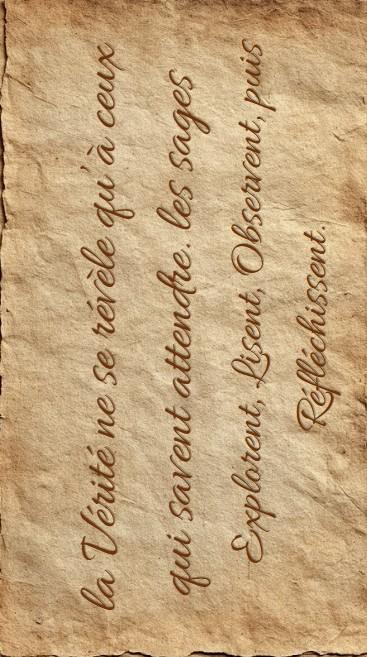

Vous êtes né à Eldoria, un petit village où la magie fait partie du quotidien. Ici, les lanternes s’illuminent à la tombée de la nuit sans qu’aucune flamme ne les éclaire, les créatures de la forêt vivent en harmonie avec les habitants et chaque ruelle semble raconter une histoire oubliée.
Depuis toujours, ce village vous émerveille. Pourtant, une question ne cesse de vous revenir : d’où vient toute cette magie ? Les légendes sont nombreuses et personne ne semble connaître la véritable origine de ce lieu extraordinaire.
Une rumeur traverse les générations. On raconte qu’un livre, écrit lors de la fondation du village, renferme toute son histoire et les secrets de sa magie. Beaucoup ont tenté de le retrouver, mais aucun n’y est parvenu.
Aujourd’hui, vous décidez de partir à sa recherche pour espérer découvrir la véritable histoire d’Eldoria.
Dans cette aventure, tu devras explorer Eldoria et résoudre des énigmes. Chaque énigme te rapprochera du livre légendaire qui renferme les secrets du village.
Observe attentivement la carte, interagis avec les éléments, et fais preuve de logique. Certaines réponses se cachent dans les détails.
Si jamais tu as besoin d’aide tu peux cliquer sur le point d’interrogation en bas à gauche. Pour réouvrir le parchemin, clique sur le bouton en bas à droite.
Parfois tu auras un texte à lire. Clique sur pour l’écouter.
Pour commencer, je te conseille de demander de l’aide à quelqu’un. Va voir du côté du restaurant, à droite de la fontaine. Tu y trouveras sûrement Eldrin, installé à une table comme à son habitude. Il pourra sûrement t’aider. Bonne chance, voyageur. Que la magie d’Eldoria guide tes pas.
Ici tu pourras afficher un indice ou une solution.
Tu peux mettre plusieurs paragraphes, ou même plusieurs pages.

Bonjour,
Je suis Eldrin. J’imagine que tu as entendu parler de cet étrange livre...
Personne ne sait vraiment d’où il vient. Certains disent qu’il renferme l’histoire de notre village et qu’il
raconte comment la magie est arrivée jusqu’ici. Malheureusement, je ne peux pas t’en dire davantage.
En revanche, il y a peut-être quelqu’un qui pourra te donner des réponses.
Au bout du chemin se trouve
une vieille maison abandonnée... Enfin, c’est ce que pensent la plupart des habitants. En réalité, Eldorin, un
vieux mage y vit encore. Il connaît les anciennes légendes d’Eldoria mieux que quiconque, et certains disent
qu’il est le seul à savoir où se cache le fameux livre que tu recherches. Va le trouver. Si quelqu’un peut t’aider
à découvrir ce que tu cherches, c’est bien lui. Cependant, fais attention. Malgré son vieil âge, il a encore toute
sa tête et se méfie énormément des inconnus. Il ne te donnera pas les réponses si facilement.
Voici un papier
qui pourra sûrement t’aider.
Que la magie d’Eldoria t’accompagne. L’avenir de notre village repose peut-être
entre tes mains... Bonne chance !
la Vérité ne se révèle qu’à ceux qui savent attendre. les sages Explorent, Lisent, Observent, puis Réfléchissent.